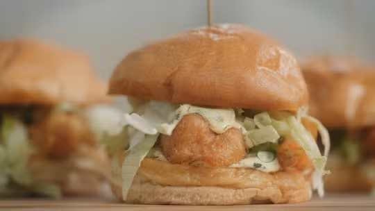

Palitos de frango com queijo

Ingredientes:
- 300 gramas de filé de peito de frango picadinho (na faca ou processador)
- Meia colher de sopa de páprica defumada
- Meia colher de sopa de pimenta-do-reino
- 2 colheres de sopa de farinha panko
- 2 colheres de sopa de farinha de trigo
- 50 gramas de queijo parmesão ralado grosso
- Sal a gosto
Modo de Preparo:
- Em uma tigela, adicione 300 gramas de filé de peito de frango picadinho na faca ou processador, meia colher de sopa de páprica defumada, meia colher de sopa de pimenta-do-reino, 2 colheres de sopa de farinha panko, 2 colheres de sopa de farinha de trigo, 50 gramas de queijo parmesão ralado grosso e sal a gosto.
- Coloque o frango temperado em uma superfície lisa, forrada com plástico-filme e vá modelando as mãos, formando um quadrado de mais ou menos 20 centímetros, com 1 centímetro de espessura.
- Cubra com plástico-filme e leve ao freezer por 30 minutos.
- Retire o frango do freezer, descarte o plástico-filme e, com uma faca, corte palitos com 1 centímetro de espessura.
- Frite em uma panela com óleo quente, 180 graus Célsius, até dourar.
- Retire da panela com uma escumadeira, coloque em um prato com papel-toalha e sirva com molho.
Panceta de porco à pururuca

Ingredientes:
- 1 quilo e 800 gramas de panceta de porco
- Pimenta-do-reino a gosto
- Páprica defumada a gosto
- 2 colheres de sopa de farinha panko
- 2 colheres de sopa de farinha de trigo
- 50 gramas de queijo parmesão ralado grosso
- Sal a gosto
Modo de Preparo:
- Em cima de uma tábua, tempere a panceta de porco com páprica defumada, sal, pimenta-do-reino e azeite. Misture bem com as mãos.
- Vire a panceta e deixe o lado da pele para cima. Adicione o sal grosso para fazer uma camada fina. Divida a carne ao meio com uma faca.
- Leve a carne para uma assadeira coberta com papel-alumínio, com a parte brilhante encostando na carne. Leve para a geladeira, sem cobrir, por 8 horas.
- Retire da geladeira, tire todo o sal grosso e seque bem a carne com papel-toalha ou pano bem limpo. Faça furos com um garfo.
- Leve a carne suína para assar por 4 horas, numa temperatura a 120 graus Célsius em forno elétrico. Depois, coloque em temperatura máxima e deixe por mais 20 minutos. Caso use o forno convencional, aumente a temperatura. Em seguida, deixe o forno na temperatura máxima e deixe pururucar.
Sanduiche de camarão com abacaxi
Ingredientes:
- 12 camarões grandes limpos, sem casca e sem cabeça
- Sal a gosto
- Pimenta do reino moída a gosto
- 1 xícara de farinha de trigo
- 1 litros de óleo de girassol
Modo de Preparo:
- Comece fazendo a massa de tempurá misturando todos ingredientes com auxílio de um fouet e leve para geladeira para descansar por pelo menos 30 minutos.
- Faça o molho tártaro misturando todos ingredientes.
- Corte os pães de hamburguer ao meio, passe manteiga na parte de dentro e doure em uma frigideira quente por cerca de 2 minutos, a ideia é selar o pão, ele deve ficar douradinho.
- Agora os camarões, coloque o óleo em uma panela grande e leve ao fogo baixo.
- Corte os camarões longitudinalmente, mas sem separar as metades, de uma amassadinha com delicadeza para ficar “espalmado”. Temper com sal e pimenta do reino.
- Cheque se o óleo está quente para fritura.
- Passe o camarão na farinha de trigo e depois mergulhe o camarão na massa de tempurá, com cuidado para não perderem a forma. Coloque para fritar e vire depois que estiver dourado.
- Retire do óleo com auxilio de uma escumadeira e coloque em um prato com papel absorvente.
- Monte o sanduiche colocando o molho, 2 camarões empanados, mas um pouquinho de molho, cebolinha picada e alface cortada.